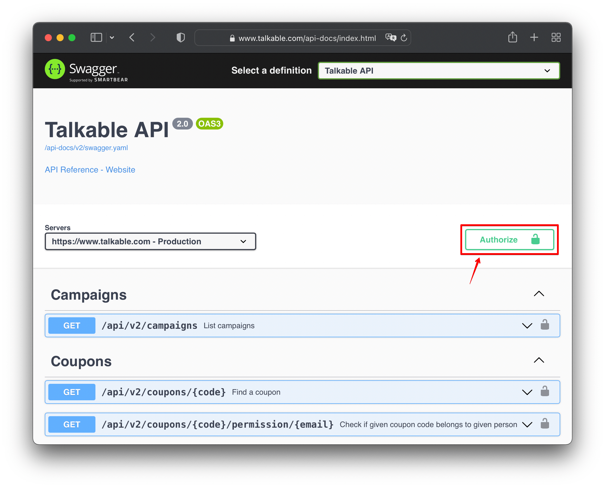
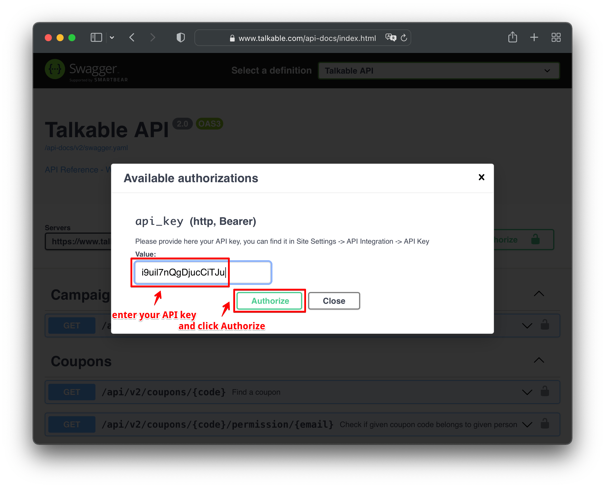
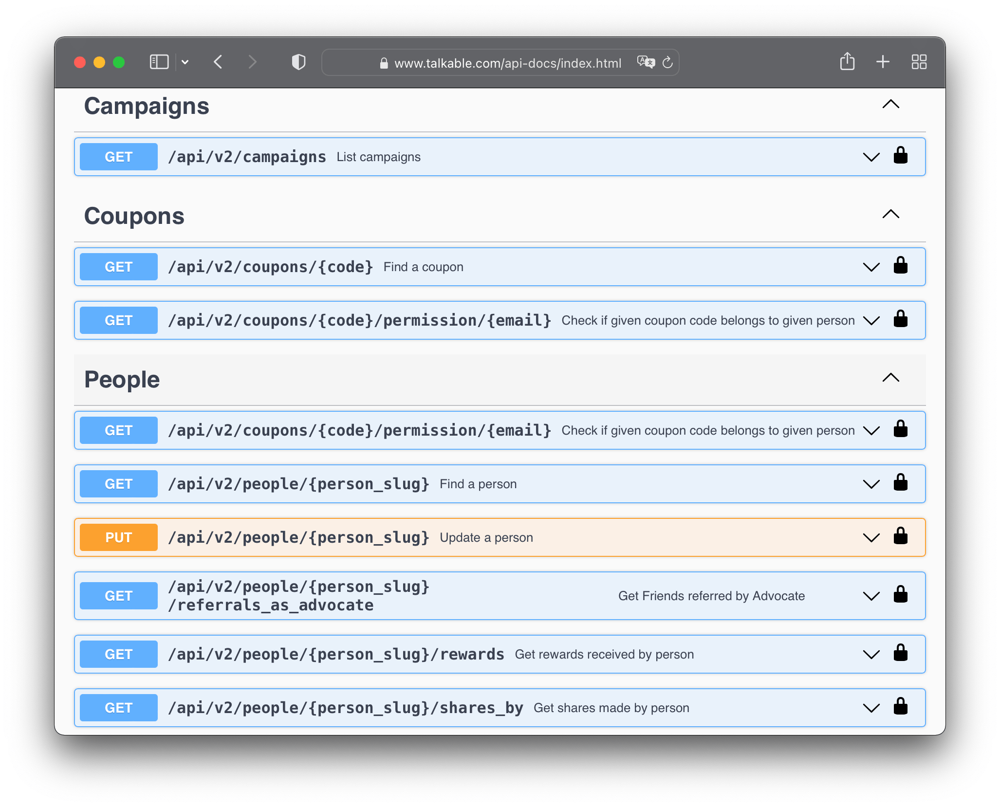

Introduction¶
The Talkable API is built on HTTP. Our API is RESTful, returns JSON and responds with standard HTTP response codes to indicate errors.
Access the Talkable API¶
You can access documentation for the Talkable API and issue API calls from the Talkable API user interface.
The Talkable API user interface is available here:
https://www.talkable.com/api-docs/
Click Authorize to log in with the API key:

Enter the API key and click Authorize again:

Click Close. The Authorize lock icon changes to locked:
{kind=link}
Actions
For details about the API call, expand the API method for each call. To issue an API call from the Talkable API user interface, click Try it out for any method. Edit the Example Values in the request body and click Execute.

Authentication¶
You authenticate to the Talkable API by providing your API Key in the request. You can manage your API key in the Account Settings.
Warning
Keep your API key secret!
You should not embed the API key within a web page and make Talkable API calls within JavaScript running within a browser. Once someone has your API key, they could create their own API calls.
Authentication to the API is performed via Bearer authentication header.
Example Request
curl 'https://www.talkable.com/api/v2/campaigns?site_slug=my-store' \
-H 'accept: application/json' \
-H 'Authorization: Bearer i9uil7nQgDjucCiTJu'
Response Format¶
The API returns JSON-encoded objects (content-type: application/json).
Responses vary according to the method used, but every successful response envelope includes these common parts:
{"ok": true, "result": ...}
Date Format¶
Talkable returns JSON for all API calls. JSON does not have a built-in date type, dates are passed as strings encoded according to ISO 8601. This format is supported by most programming languages out of the box:
2022-02-16T02:43:58.797-07:00
Errors¶
The following represents a common JSON error response resulting from a failed Talkable API call:
{"ok": false, "error_message": "Message describing the error"}
Most error messages that Talkable API will return are not meant to be shown to the user. We expect your service to gracefully handle errors and only show meaningful information to the user.
Talkable returns standard HTTP response codes.
Code |
Description |
|---|---|
200, 201 |
Everything worked as expected |
400 |
Bad Request - Often missing a required parameter |
401 |
Unauthorized - No valid API key provided |
404 |
Not Found - The requested item doesn’t exist |
422 |
Unprocessable Entity - The requested create, update,
or delete cannot be performed due to validation errors.
|
429 |
Too Many Requests |
500, 502, 503, 504 |
Server Errors - Something is wrong on Talkable’s end |
Request Throttling¶
Talkable limits the rate of requests to ensure that services are reliable and
responsive for customers. Our throttling mechanism is implemented in the next
way: we calculate number of resources each client consumes for all requests made
to Talkable (not only API requests, but rather all requests from all
integrations e.g. JavaScript integration library, Mobile SDK etc.), and if the
customer (site) consumption of the resources increases unexpectedly, we start to
throttle requests for this customer by responding with HTTP status code 429.
Rate limits are not published because the computation logic is evolving
continuously to maximize reliability and performance for customers.
Note
In case the request was throttled and the server responded with HTTP status
code 429, we recommend to retry the request. Consecutive calls might
return 429 until the load on the server goes down. Your application
should implement a retry logic with incremental backoff in the realm of
seconds and up to minutes.